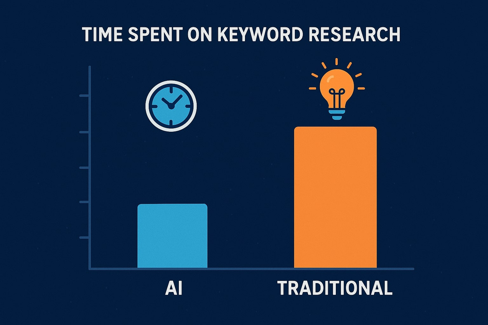
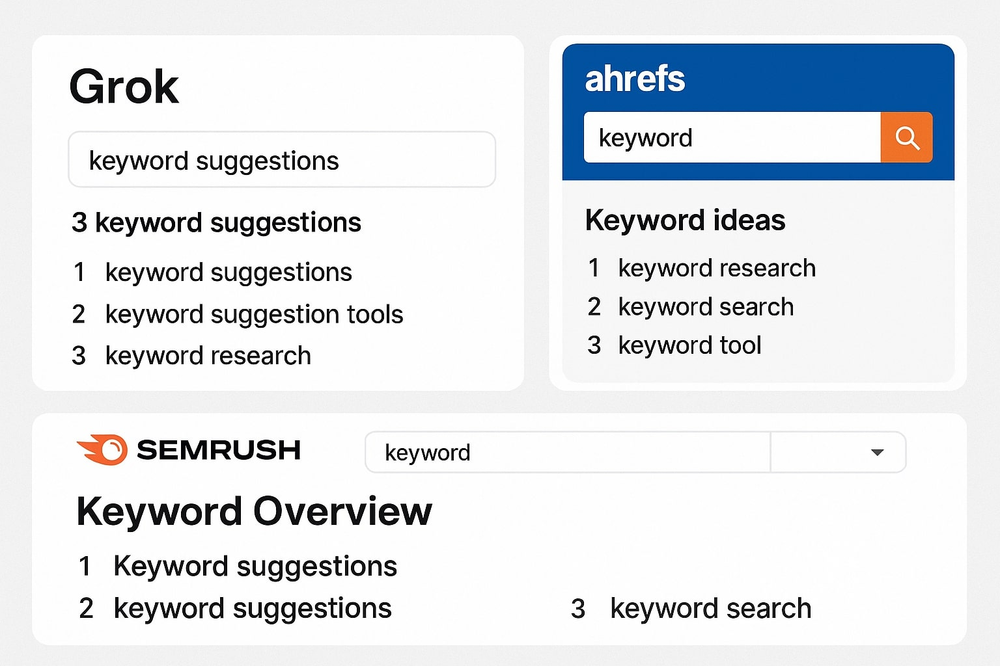
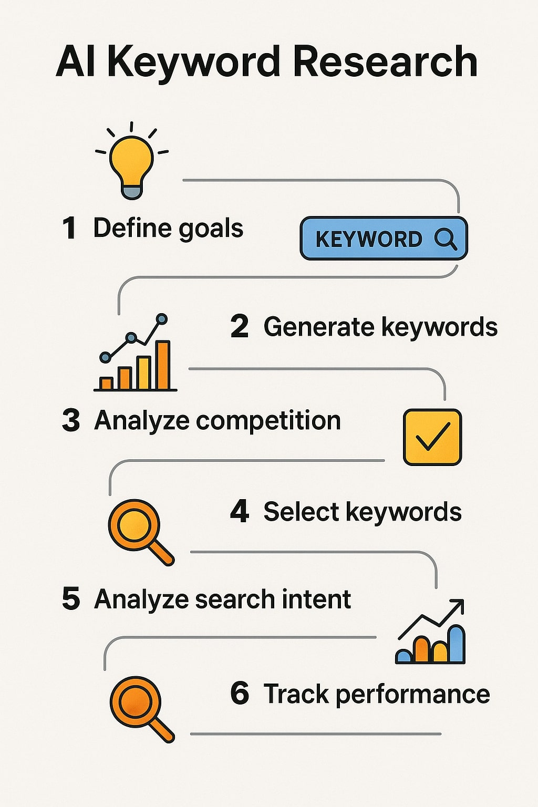
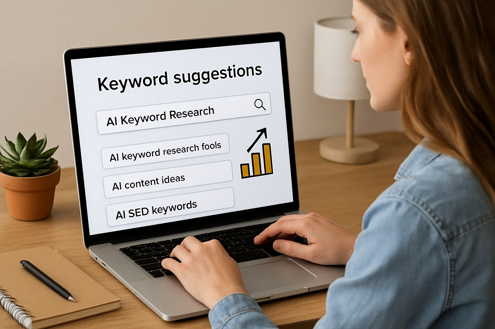

AI tools go beyond simple volume and competition metrics. They incorporate natural language processing (NLP) to understand semantic relationships between words, predict search trends, and even generate content ideas. For niche bloggers, this means discovering long-tail keywords—specific phrases with lower search volume but higher conversion potential.
One key benefit is efficiency. Manual research might take hours; AI can process thousands of queries in seconds. Tools like Grok or ChatGPT can simulate user searches, while specialized platforms like Ahrefs AI or SEMrush integrate predictive analytics. This leads to better content strategies, as AI identifies gaps in existing content and suggests optimizations.
Another advantage is accuracy. AI considers factors like search intent (informational, navigational, transactional), seasonality, and regional variations. For a niche blog on urban beekeeping, AI might suggest "best beehives for small balconies" over broad terms like "beekeeping," avoiding high-competition pitfalls.
Finally, AI enhances scalability. As your blog grows, tools can track performance and refine strategies automatically, ensuring sustained growth in traffic and revenue.
1. Grok by xAI: This LLM excels at generating keyword ideas from prompts. Input "niche blog on vegan baking" and it suggests variations like "gluten-free vegan cookie recipes easy." It's free for basic use and integrates with other tools.
2. Ahrefs AI: Combines backlink analysis with AI-driven keyword suggestions. Its Content Explorer uses AI to find trending topics in niches, with metrics like difficulty scores. Pricing starts at $99/month, but worth it for serious bloggers.
3. SEMrush: Features an AI-powered Keyword Magic Tool that clusters keywords semantically. Ideal for niches, it predicts search volume changes and offers competitor insights.
4. Surfer SEO: AI optimizes content around keywords, suggesting density and related terms. For niche blogs, its real-time editor ensures articles rank higher.
5. Google Bard or Gemini: Free AI from Google that ties into search data. It generates long-tail keywords and even outlines blog posts based on them.
Step 1: Define Your Niche. Start by outlining your blog's focus. Use AI to brainstorm subtopics—e.g., prompt Grok: "Generate 20 keyword ideas for a blog on sustainable travel in Europe."
Step 2: Gather Seed Keywords. Input broad terms into AI tools. Ahrefs can expand them into hundreds of variations, filtering by volume and competition.
Step 3: Analyze Intent and Competition. AI tools like SEMrush classify keywords by intent. Look for those with low difficulty (under 30) and decent volume (100-1,000 searches/month) for niches.
Step 4: Cluster Keywords. Use AI to group related terms (e.g., "vegan baking tips" with "easy vegan desserts"). This creates content pillars for your blog.
Step 5: Validate and Optimize. Test keywords in Google Search Console or AI simulators. Refine based on predictions, then create content.
Step 6: Monitor and Iterate. Post-publication, AI tracks rankings and suggests updates, keeping your niche blog relevant.
Consider a blog on rare book collecting. Using Grok, the owner discovered "first edition Harry Potter value guide," a low-competition keyword driving 500 monthly visitors after optimization.
Another example: A fitness niche blog for seniors used SEMrush AI to target "low-impact exercises for arthritis," boosting engagement by 40% through tailored content.
These cases show AI's power in uncovering untapped niches, leading to higher monetization via ads, affiliates, or products.
While AI is powerful, over-reliance can miss nuances—always cross-verify with human intuition. Privacy concerns arise with data-heavy tools, so choose reputable ones.
Best practices: Combine multiple AI tools, update regularly, and focus on user value. Integrate with analytics like Google Analytics for full insights.
AI tools are game-changers for keyword research in niche blogging, offering speed, depth, and precision. By adopting them, bloggers can outpace competitors and build loyal audiences. Start small with free tools like Grok, scale up, and watch your traffic soar.